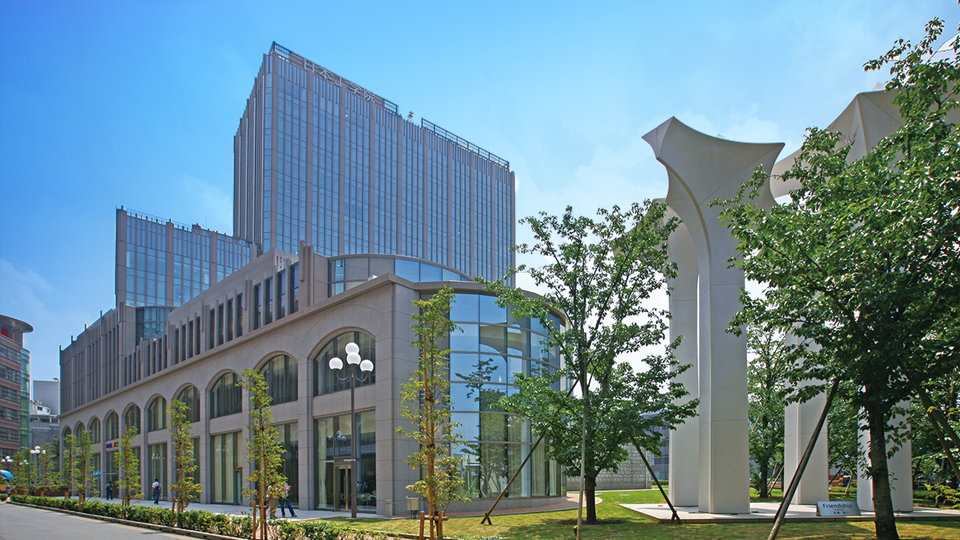
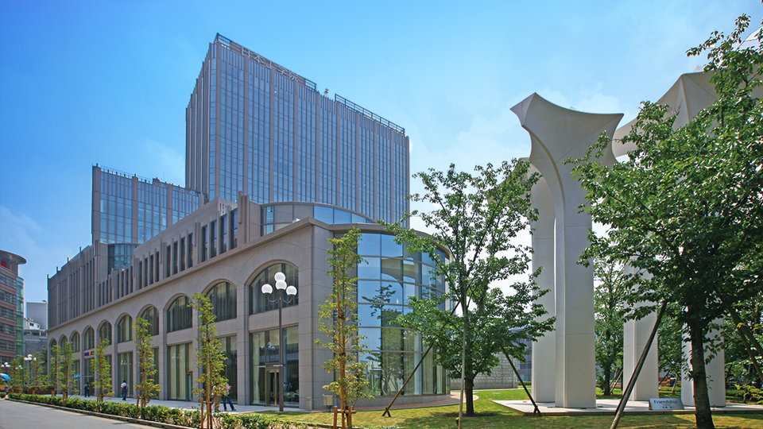

このサイトでは、私の学校のお勧めの場所を紹介します。
3 号館のフロアガイド
私の所属する IT カレッジがある 3 号館のフロアガイドをみるには、 ここをクリックしてください。
★★★ 学校内でのお勧め 4 選 ★★★
- ①12Fラウンジ
- ラウンジ内から見る外の景色がきれいです
- ②安くて美味しい食堂
- ワンコインで美味しい学食が食べれます
- ③きれいなトイレ
- きれいなことは重要なことです
- ④購買部
- 雑誌や漫画、イヤホンなど色んなものがあります
メッセージをお待ちしています。
作成者：K020C1563 奥山勝大
このサイトでは、私の学校のお勧めの場所を紹介します。
私の所属する IT カレッジがある 3 号館のフロアガイドをみるには、 ここをクリックしてください。
メッセージをお待ちしています。
美味しいとんかつ屋さん